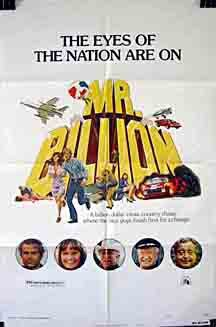
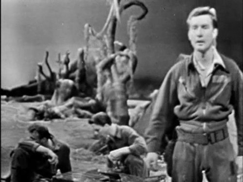
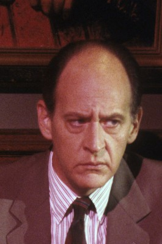
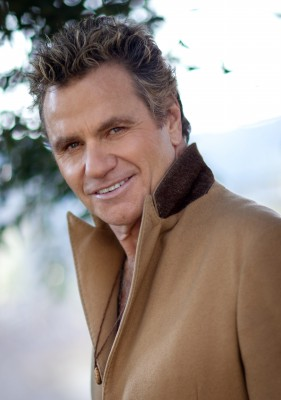
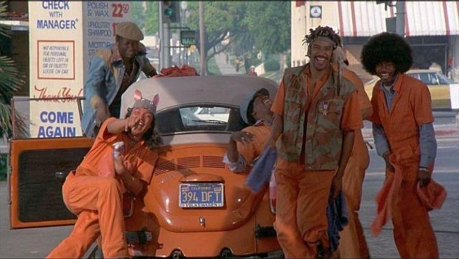

#4390 Mr. Billion
Alternativ: Mr. Billion
 
 IMDB-Wertung: 5.5 / 10
IMDB-Wertung: 5.5 / 10  Metascore: 0
Metascore: 0 
Der einfache, italienische Automechaniker Guido Falcone erbt von seinem Onkel ein Vermögen. Die einzige Bedingung: Innerhalb von 20 Tagen muss er von Rom nach San Francisco reisen und den Vertrag unterschreiben. Doch auf dieser abenteuerlichen Reise begegnen ihm sehr lästige Mitstreiter, die es auf das Geld und das Firmenimperium des Onkels abgesehen haben...
Jahr: 1977
Dauer: 92 Minuten
FSK: 12
Land: Studio: 20th Century FoxTonspuren:
Untertitel: Deutsch,
Auflösung: 1080p (1920x1040) Größe: 9574 MB
Genre: Drama, Komödie, Liebe, Action
Regisseur: Jonathan Kaplan
Drehbuch: Mario Amendola
Soundtrack:
Darsteller:
 Terence Hill als Guido Falcone
Terence Hill als Guido Falcone Valerie Perrine als Rosie Jones
Valerie Perrine als Rosie Jones Jackie Gleason als John Cutler
Jackie Gleason als John Cutler- Slim Pickens als Duane Hawkins
-  William Redfield als Leopold Lacy
 Chill Wills als Col. Clayton T. Winkle
Chill Wills als Col. Clayton T. Winkle Dick Miller als Bernie
Dick Miller als Bernie R.G. Armstrong als Sheriff T.C. Bishop
R.G. Armstrong als Sheriff T.C. Bishop Bob Minor als Black Kidnapper
Bob Minor als Black Kidnapper Leo Rossi als Italian Kidnapper
Leo Rossi als Italian Kidnapper-  Earl Boen als Col. Winkle's Aide
- Denver Mattson als Deputy Joe
- Don Baldaramos als Policeman
 Paul Bartel als Bit Part , uncredited
Paul Bartel als Bit Part , uncredited-  Martin Kove als Texas Gambler , uncredited
 Mary Woronov als Bit Part , uncredited
Mary Woronov als Bit Part , uncredited- Kate Heflin als Lucy
- Sam Laws als Pops Dinwitty
- Johnny Ray McGhee als Carnell Dinwitty
- David S. Cass Sr. als Boss Kidnapper
- Frances Heflin als Mrs. Apple Pie
- Robert Staats als Conductor
- Eric Barnes als Col. Winkle's Aide
- Marvin 'Swede' Johnson als Hy Kitchmiller
 Bob Herron als Moose the Bodyguard
Bob Herron als Moose the Bodyguard- Neil Summers als Deputy Hank
- Dan Leegant als Bus Clerk
- Stephanie Kohl als Airline Passenger
- Ralph Chesse als Anthony Falcon
- Helen Bentley als Baba Wawa, TV Reporter
- Julia Hare als Nancy the Newscaster
- Marilyn Gleason als Make-Up Lady
- George W. Cumming als Cable Car Conductor
-  Henry Kingi als Indian
- Stan Ritchie als Bartender
- Clay Braden als Airline Stewardess
- Walt Davis als Chauffeur
- James W. Gavin als Airline Pilot
- Aldo Rendine als Restaurant Owner
- Gianna Dauro als Restaurant Owner's Wife
- Maurizio Fiori als Restaurant Owner's Eldest Child
- Massimiliano Filoni als Restaurant Owner's Youngest Child
- Marco Tulli als Translator
- Cesare Nizzica als Head Mechanic
- Victoria George als Lady Waiting for Car
- Polky als Dashiell the Dog
- Frank Barone als Casino Manager , uncredited
- Will Marchetti als Cable Car Driver , uncredited
- Laurence Somma als Dealer , uncredited
- Sam Younghans als Cellmate , uncredited
Datei: X:\Person\Bud Spencer + Terence Hill\Mr. Billion (1977, FSK12, 1920x1040).mkv seit 13.09.2016
Festplatte: HD Collection-7+mehr(A-Z)+Person
 Es gibt insgesamt 43 Filme in der Gruppe 'Person\Bud Spencer + Terence Hill'
Es gibt insgesamt 43 Filme in der Gruppe 'Person\Bud Spencer + Terence Hill'